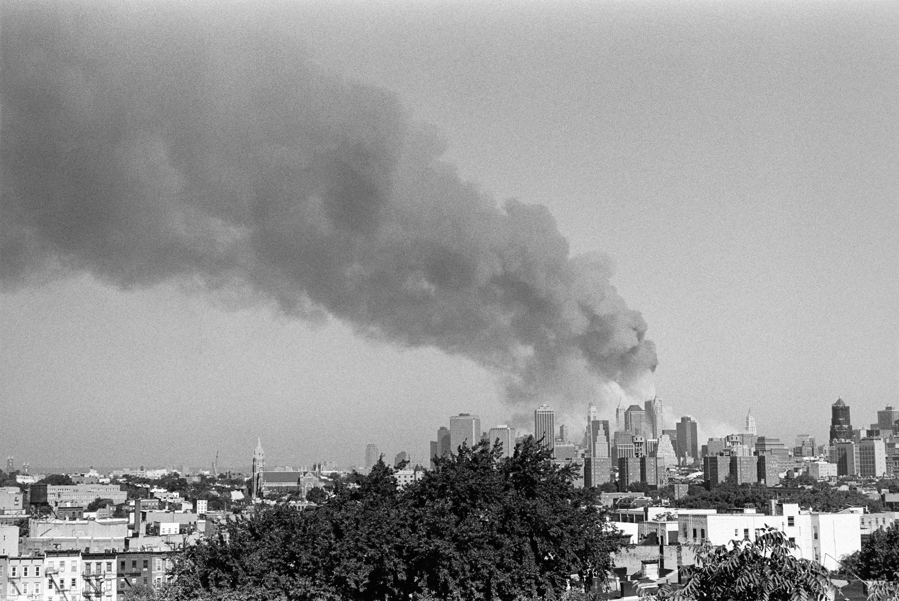

Imagen: Julien Maculan, Unsplash
11 de septiembre de 2001, 8:46 horas. Un momento que cambió al mundo.
El vuelo 11 de American Airlines se estrelló contra la Torre Norte del World Trade Center en Nueva York. Casi 3000 personas perdieron la vida en este fatídico día.
Sin embargo, los atentados a las Torres Gemelas no solo provocaron una tragedia humana, sino que transformaron la agenda internacional por completo. A partir del 11-S, Estados Unidos declaró la llamada "guerra contra el terrorismo", que se tradujo en intervenciones militares en Afganistán e Irak.
La lucha contra el terrorismo pasó a ocupar un lugar central en la política internacional y redefinió las prioridades de seguridad del mundo durante las siguientes décadas. Entonces, la pregunta no es únicamente cómo responder a la violencia, sino qué entendemos por paz cuando la seguridad se construye a partir de una amenaza.
El 11-S abrió una nueva etapa en la que la respuesta a la violencia estuvo directamente vinculada con el uso de la fuerza. Responder a la violencia con más violencia puede parecer una respuesta inmediata, pero no necesariamente resuelve el conflicto de fondo.
Después de 25 años, es necesario preguntarnos qué aprendimos de aquella respuesta. ¿Es suficiente contener una amenaza para la alcanzar la paz? ¿O necesitamos también voltear a ver las condiciones que permiten que los conflictos escalen y que la violencia se reproduzca?
Johan Galtung (1985) distingue entre paz negativa y paz positiva. La primera se relaciona con la ausencia de violencia, mientras que la segunda implica transformar las condiciones que generan y reproducen la violencia. Desde esta perspectiva, el objetivo no es eliminar los conflictos, que son inevitables en cualquier sociedad, sino transformar la manera en que se gestionan y las condiciones que pueden llevarlos hacia la violencia.
Esto no significa ignorar las amenazas ni renunciar a la seguridad. Significa reconocer que la construcción de paz requiere herramientas capaces de transformar los conflictos: prevención, diálogo, negociación, mediación, entre otras. La fuerza puede contener una amenaza, pero difícilmente puede construir una paz positiva.
Construir paz significa trabajar antes: identificar las causas, transformar las relaciones, abrir espacios para el diálogo y crear condiciones en las que la violencia deje de ser la respuesta más probable.
A las 8:46 horas de aquella mañana cambió el mundo. 25 años después, recordar el 11-S también implica preguntarnos qué hemos aprendido sobre la violencia y, sobre todo, qué podemos hacer diferente para construir paz.
CIPMEX · Centro de Investigación para la Paz México, A.C. · Paz que se piensa, paz que se construye